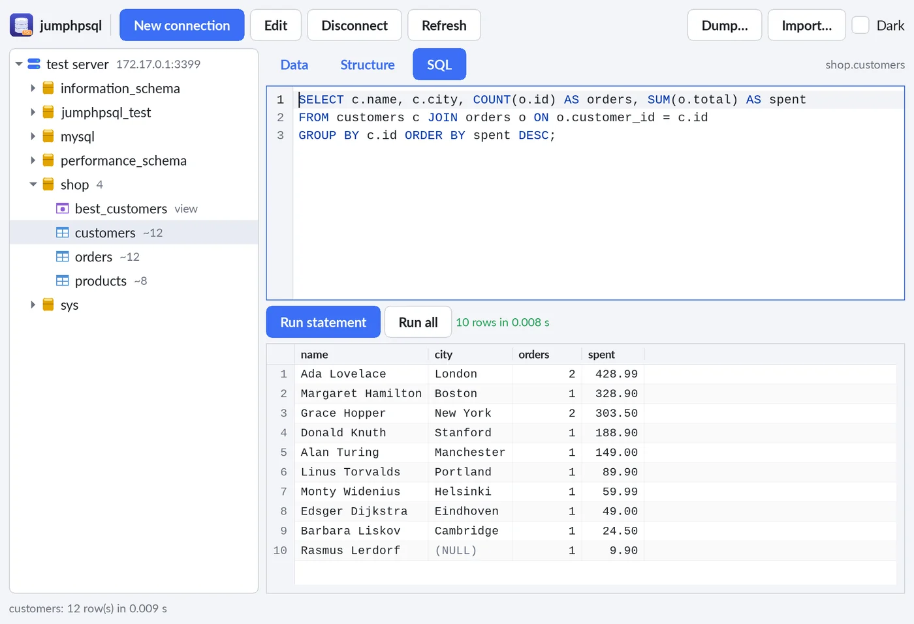
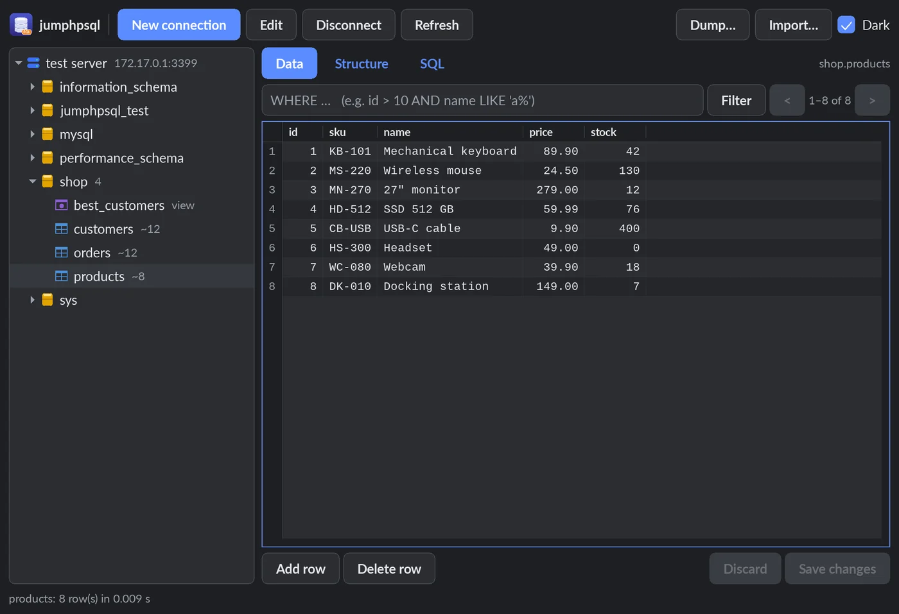

Ce qu’il fait
Connexions enregistrées
Hôte, port, utilisateur, base par défaut ; le mot de passe enregistré ou demandé. Chaque connexion est testée avant d’être enregistrée.
L’arbre des bases
Les bases, leurs tables et leurs vues, avec le nombre de lignes de chaque table.
Les lignes d’une table
Filtre WHERE, tri en cliquant sur une colonne, pages de 200 lignes. Les valeurs NULL sont bien distinguées.
Édition sûre
Modifiez les cellules sur place, ajoutez et supprimez des lignes, puis enregistrez tout en une transaction : rien n’est écrit si une requête échoue.
Éditeur SQL
Coloration, Ctrl+Entrée exécute la requête sous le curseur, F5 tout le script ; les lignes de chaque résultat.
La structure
Les colonnes d’une table (type, clé, défaut…) et son CREATE TABLE.
Dumps et imports
Sauvegardez une base ou une table en .sql, rejouez un fichier .sql, avec une barre de progression.
Tunnels SSH
Passez par un bastion : agent SSH de la session, fichier de clé avec sa phrase de passe, mot de passe, ou votre ~/.ssh/config.
Thème sombre
Clair ou sombre, d’un clic.
En images




Du PHP, de bout en bout
jumphpsql est fait avec JumPHP : la fenêtre, les boutons, la grille de données et l’éditeur sont dessinés par PHP (JumPHP\Gui, sans HTML). Le client MySQL est écrit en PHP lui aussi, non bloquant : les requêtes partent en file, les réponses arrivent entre deux images. Compatible MySQL 5.7 / 8.x et MariaDB (mysql_native_password, caching_sha2_password, client_ed25519).
L’installer
Clonez le dépôt et lancez l’application avec la commande de JumPHP (tout tourne dans Docker, rien à installer d’autre) :
git clone https://github.com/davidnurdin/jumphpsql.git
cd jumphpsql
bin/jumphp run jumphpsqlQuestions fréquentes
Est-ce gratuit ?
Oui, et son code source est sur GitHub.
Quels serveurs sont pris en charge ?
MySQL 5.7 et 8.x, et MariaDB, avec les méthodes d’authentification courantes.
Mes modifications peuvent-elles casser une table ?
Les changements restent en attente jusqu’à « Save changes », puis partent dans une seule transaction, annulée à la première erreur.
Puis-je me connecter à un serveur derrière un bastion ?
Oui, par un tunnel SSH : agent, clé, mot de passe ou ~/.ssh/config. Les secrets ne passent jamais par la ligne de commande.
Fonctionne-t-il dans le navigateur ?
L’interface s’y affiche, mais un navigateur ne peut pas ouvrir de connexion TCP vers MySQL : utilisez la version de bureau.